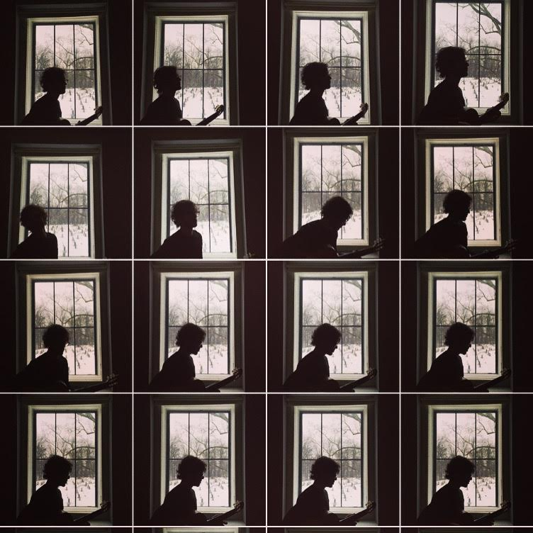

Blog
A musician, not a blogger
Nov 15 2023
That says it all. But I'll keep this up in case inspiration hits. Things are still in motion. Producing some amazing artists, writing, and sipping coffee currently!
New Indiana in Motion Picture
Dec 13 2021
For the past couple of years New Indiana has been working on a short film. It's a stop motion musical journey and we had no idea where we were headed when we first began the process. Initially we were working on a podcast, meeting every Wednesday evening and writing, recording and publishing a musical work. We were all over the place until we decided to write an actual story. We really liked the songs and story and felt that we needed to add visuals. Suddenly we were in over our heads, but determined and all through the pandemic, without fail, every Wednesday evening we would still meet remotely. Topu was in Columbus, GA and I was still in Brooklyn. I was yearning for fresh air and a yard to enjoy freedom without having to...raining it back in, back to focus. Yes, back to the movie. So this passion project took hold and we indeed finished the movie. So, coming hopefully sooner than later, the Socialist. Stay tuned!
The Letter Yellow is back on Moultrie Street
Dec 12 2021
Writing...
The Letter Yellow Releases their 3rd LP "On The Other Side"
Nov 9 2018
We had a lot of fun writing and producing this record the last couple of years. Myself, Mike and Nolan (the Thies brothers) got the keys to a studio and recorded the basics. Nolan engineered the entire session, so it was just us three able to let loose. We then patiently sculpted the record in our 3 studios; songwriter factory, the blue room and the space. As we didn't have the pressure of renting a recording studio by the hour, we were able to explore a big sonic scape testing out ideas, sometimes just for fun and sometimes for some serious fulfillment. So much fun making this record and hope your ears enjoy! You can also download the record on Bandcamp - On the Other Side
The Letter Yellow Premiers "On The Other Side"
Oct 23 2018
Super excited to announce our album release party on November 14th at Zone One at Elsewhere! Have I mentioned that we had so much fun in the studio that perhaps we got carried away and 6 hands and 2 voices just couldn't cover the parts anymore? Ladies and gentlemen, please give a nice warm welcome to the newest member of the letter yellow, the ever so talented Alexa Cabellon joining us on keys/synths/vocals! And without further ado, we'd like to premier our first single "on the other side". Video created by Mike Thies. Hope you enjoy!
New Indiana's Darkness Sunshine Releases Today!
Aug 17 2018
Today is the official release of Darkness Sunshine. Stream it from everywhere, but if you want a hard copy (vinyl/cd/digital download) you can pick that up at BandCamp - Darkness Sunshine. You can also check out this amazing review at Atwood Magazine!
New Indiana's 2nd Single 'Deep in a Haze' Premieres on For Folk's Sake
Jul 24 2018
In anticipation of the new record due out August 17th, For Folk’s Sake has premiered New Indiana’s 2nd single ‘Deep in a Haze’. This has been a standout track for me since we recorded. Granted the minimalistic production, it has a relative sonic richness and lushness that carried through even in it’s rough mix stages. Check out the review and have a listen at Deep In A Haze
Cooling off with The Letter Yellow's Summer in the City
Jul 18 2018
The Letter Yellow has a new record due out at the end of the year. But meanwhile, cool down with this here video made by The Letter Yellow’s very own Mike Thies. Oh, and we have a new member to help us fill out all the 3 part harmonies and key parts, Alexa Cabellon. I’ve known and worked with Alexa for over a decade. I recorded her first EP Sunland from her band Little Anchor and we went on to play shows together and things just fell into place and now she’s a part of The Letter Yellow family! We still need to have her and Alex (that’s right, alexa and alex) over for art party…so if you are listening, that’s your cue. Enjoy the video!
New Indiana’s first single ‘Media’ premiers on Pop Matters
Jul 14 2018
Check out our first review here!
New Indiana Issues “Media” Ahead of Debut Album (premiere)
And New Indiana’s first video to their first single ‘Media’
A New Project ‘New Indiana’ With an Old Friend
Jul 14 2018
For the past couple years I’ve been working on a new project with long time friend and collaborator, Topu Lyo. We decided to name the project ‘New Indiana’ as Topu being from New Mexico and I from Indiana, it just fit. Through our 20 years of friendship and playing in bands and traversing the US and Mexico, we realized that it was time to put some of this history into motion. And so we created an album that is both autobiographical and politically present called “Darkness Sunshine”.
The Letter Yellow Releases “Watercolor Overcast”
Jul 15 2015
It’s a big day for my band The Letter Yellow celebrating our release of our 100% Analog Record which we’ve taken digital and now you can enjoy even if you don’t have a record player! You can download and stream at your favorite music gateway like iTunes and Spotify or at our store http://theletteryellow.bandcamp.com. Enjoy and thank you for all of your support!!!
NEW YORK MUSIC DAILY
Jun 23 2015
Catchy, Jangly, Propulsive, Afrobeat-Inspired Tunes from the Letter Yellow
by delarue
Do you like the idea of Vampire Weekend but find the real thing impossibly insipid? If so, the Letter Yellow are for you. Frontman/guitarist Randy Bergida writes lithely dancing, catchy major-key tunes anchored by the rhythm section of bassist Abe Pollack and drummer Mike Thies. They’re playing the album release show for their new one, Watercolor Overcast at the Cameo Gallery tonight, June 18 at 10 PM; cover is $8.
Pollack’s trebly bass plays an Afrobeat groove underneath Bergida’s balmy but tensely anticipatory vocals on the opening track, Anytime of Day, a lush, dynamically shifting, artfully orchestrated anthem. Road to the Mountain has a loping Afropop groove with an unselfconsciously joyous flute flourish on the turnaround, hitched to a gospel-inspired vamp. Summer in the City isn’t the 60s pop hit but an enigmatically sunny, soul-splashed, strummy original that in another era would have been a monster radio hit.
Pain in the World blends an edgy minor bossa groove and biting roots reggae lyricism over an echoey minor-key melody with hints of that tune that every busker from Sydney to South Carolina knows. The album’s strongest track, The Light We Shed sets pulsar guitar multitracks to a steady marching beat, echoey jangle giving way to clang and resonance. Slow Down works a slowly swaying, hypnotically summery soul vamp lit up with some sparkly keygboard flourishes.
Cold Cold Night builds a fiery, galloping nocturnal ambience, far from the wintriness the title suggests. Likewise, the soul strut Downtown has a nighttime vibe, with a long, Can’t You Hear Me Knocking-style latin psychedelic outro.
Drifter shifts toward Americana, while the final track, Can I Get It Girl goes in a more straightforward hard-funk direction, with more than a hint that it’s the style of music where the band got their start. Maybe the coolest thing about the album is that it’s available on vinyl: if the band remembers to bring a box of records to their shows, it’s a sure bet that they’ll sell out. So far, it hasn’t hit Bandcamp or the usual sites, but the band’s previous output is streaming at their audio page.
An Interview with Wobblehouse – Favorite Record, First Songs and More!
Nov 15 2012
RANDY BERGIDA, yellow letters home
1.0 – What’s the best thing about The Letter Yellow’s WALKING DOWN THE STREETS?
RB: I really connect to these songs. They were extremely natural to write
and being that the majority of the songs were written one after the
next in a span of a few months, there is a continuity that weaves
throughout all the different feels and colors of Walking Down The
Streets. I also love the freshness of the songs on the record in that
we had never performed prior to recording tracking. The idea was that
the songs had a well rehearsed touch, but they hadn’t been
overanalyzed and over structured. If a section wanted to extend
through the live tracking portion of the record, we went with it. The
spirit is in the recording and beyond all the fancy things you can do
post production, it’s the spirit that lives in the performance that
I’ve always connected to on a record.
2.0 – Did you have a sound in mind when you starting recording it or did it evolve?
RB:The sound of the record was largely inspired by the 8×8 studio we
rehearsed in. It’s hard to imagine 3 people and all our instruments
in this room, but it’s possible. The limiter on the iphones was also
something that evolved our sound. Hearing everything in a tiny room
with a big limiter compressing the music to the point that everything
sounds good gave us much hope. When we were tracking with Quinn
McCarthy at The Creamery, we went ahead and recorded all the vocals
through the voxac30 as we would rehearse. In the end, Joel Hamilton
at studio G took the clean mike and gave the essence of the amp with
his military grade compressors (no joke).
3.0 – Do you consider branding & image as part of the artistic process?
RB:I think of it more as just letting your personalities come out.
Pretty much the same way I think with clothing. It’s superficial yes,
but at the same time it’s nice for people to have an idea of who you
are just by looking at you. All I want is for the music and the image
to be an honest representation of us. I would give credit to image
being a part of the artistic process much like when I write, I think
about how the songs will translate live.
4.0 – When did you start writing songs and what was your first?
RB:My first! oh my, I try to forget those songs, hahaha. I started
writing when I started playing the guitar around 10 or 11. I wasn’t
writing the same way I do now. I was just trying to get better at
playing the guitar and I wasn’t so fond of playing other peoples songs
quite yet. Plus I was so curious about theory that I would write
something and then try to analyze it. So I wrote little things that
challenged me. I never performed them. I think my first official
song I wrote was called “One/People Get Ready”. Of course both Curtis
Mayfield and Bob Marley have a song with that title and I’m honestly
not quite sure if they are the same. That always confused me.
5.0 – Do you have a philosophy when it comes to writing?
RB:Yes, when it comes grab it. I have these moments of creativity and I
just know that these are my good songs. But I have to be organized
and make sure to write things down and record ideas. I have to
complete the lyrics before I can move on as coming back to lyrics
never works for me. They are there in that moment and it’s my job to
write them down then and there.
6.0 – And what about the stage and playing live?
RB:I love it. It has always fueled my well being I feel. And it’s addictive.
7.0 – How did you catch the roots bug originally?
RB:I suppose growing up in Indianapolis, it was a bit stagnant, but
getting out into nature was always fun and always lifted my spirits (I
never knew something like NYC would have the same effect on me).
8.0 – id you have to work at it or does it come naturally, or both?
RB:Overall music came naturally, but I certainly have and still do work
very hard.
9.0 – What’s your favorite record of all-time?
RB:That’s the heavy question. As I’m playing through my music library on
shuffle, all these great songs are coming on “Side with the Seas” off
SKy Blue Sky by Wilco, Curtis Mayfield, Live at Bitter End...The Best
of the Wailers (which is not a compilation oddly enough)…And then
theres my Billie Holiday Collection on vinyl that just blows my mind.
Nonetheless, if you were going to leave me with only one of these
songs/albums with the trapped on an island metaphor, it would have to
take the The Best of The Wailers. I’ve known those songs my whole
life and I still get happy every time I hear them.
10.0 – What was the first concert you attended and how did it impact your
life if at all?
RB:The first concert I ever saw was John Mellencamp…he’s Indiana born
and bred like me. It was actually pretty awesome. After all, it was
my first concert and the venue, Dear Creek, is a really special venue
as it’s outdoors and country all around. I think this year was the
year of my favorite concerts…I saw Radiohead which pretty much blew
my mind…I’m usually ready to let my ears rest at the end of a
concert, but after there 2 hour plus performance, I wanted more!
Art Party for Hurricane Sandy
Oct 31 2012
Our latest edition of Art Party was held after the hurricane was labeled post tropical and we could leave our shelters without fear of falling trees, limbs and electrocution. We were lucky here in Brooklyn and we hope the rest of NYC and other areas of the east coast can have a quick recovery. Visit our latest edition of art party here at Art Party.
The Letter Yellow Record Releases In Brooklyn
Sep 11 2012
This past weekend was a big weekend for my band The Letter Yellow. We released our record here locally in Brooklyn at Glasslands Gallery with Little Anchor and LIve Footage. It was an amazing night of great music and great people.
And it gives me no better introduction to our debut album “Walking Down The Streets” by The Letter Yellow!
Introducing The Letter Yellow
Aug 15 2012
I want to take this time to make an introduction to my new project The Letter Yellow. A couple years in the making, an album all packaged and ready to be released, and our debut performance at Glasslands Gallery on September 9th. We will be joined by good friends Little Anchor and an after party with Live Footage. The doors will be opening at 8:30. You can read more about the show and purchase tickets at PopGunPresents.
Join us at TheLetterYellow.net
Like us at Facebook.com/TheLetterYellow
Follow us at Twitter – @TheLetterYellow
Our First single!
Songwriter Factory in Production
Mar 22 2012
2011 was an amazing year for Songwriter Factory. Among the day to day teachings and demo’s, two full length records were engineered, mixed and produced all within the doors of Songwriter Factory located in Greenpoint Brooklyn. These celebrated singer/songwriters, Bianca Merkley and Alec Robert Samuel, are off touring the landscapes of the US and Europe. Originally Songwriter Factory was founded on Songwriting Lessons in Brooklyn, Guitar Lessons in Brooklyn, as well as Voice Lessons in Brooklyn. He teaches all levels of students to Sing, Play Guitar, and write songs. From the beginning demo’s were being produced for many of the talents coming through the door as their skills and songs were refined. To name a few, Alexa Cabellon of Little Anchor, Richard Duke of the Go Round, as well as Turkish pop singer/songwriter Ahmet Korukcu. Songwriter Factory is a unique blend of learning to hone the instruments that make up an integral role in songwriting (guitar and voice) as well recording these precious gems of songs. The studio has grown immensely in terms of gear since the beginning. It’s a small studio, but the sounds and gear bear a beautiful blend of top of the line analogue and digital technology as well as a fine assortment of super cool microphones! This is an exciting time for Randy Bergida and Songwriter Factory. Come by and check things out for yourself!
The Randy Band is coming to life
Jun 9 2011
The time’s are a changin’ and I am just a pebble in the sea. There will be shows soon to come with a breath of fresh new material I have been working on for the past year. I have been working with Abe and Mike to bring these vignettes to life. We will see you soon world!
Where have I been…Shows!!!
Apr 12 2010
I know it’s been a while, but I have a few fun shows coming up! This Wed. Skidmore Fountain will play Spike Hill with Setting Sun and Quitzow. What’s so special about this…well we have some new tunes! And they are not what you may expect from your standard rock band with a cellist…oh no. In fact our cellist is now playing the bass guitar tuned in 5ths…sounds strange to you musical geeks right? Well actually, it’s not that strange, just a different take. Ok…enough…just bring your dancing shoes this time. Seriously, you’ll regret it if you don’t 🙂
And Next Monday the 19th Aly and Randy will be at Spike Hill. “What”, you say, “Aly and Randy”? That’s right! I know it’s been a really long time, but we are gonna return with a full band as part of a jazz series from Knocks from the Underground. And we’ll have a couple new tunes to share too!
So stay tuned…
New Orleans to Tucson
Mar 27 2010
Getting a little inspiration by exploring the U.S…new places, old faces and fresh songs. Speaking of fresh songs, I have a fifteen year old songwriting student who is bringing it to the table! She told me her 9 year cousin is also writing great songs and I asked how someone so young has enough life experience to actually have something to write about. Then she revealed to me her trick…TV. Wow, I was fooled, but the songs still great!
The Living Room Residency Comes to a Close
Dec 2 2009
Nostalgia hit me immediately as I walked into the dark venue that was shut down for the evening. I grabbed my last piece of gear and took a look around. What a fun 6 weeks of music. Starting off with CMJ, then to the Skidmore Fountain residency, then to releasing my new record “Firebug” on my birthday. So this was definitely a month to remember. I have seen some amazing performers at the Living Room including Norah Jones and it just gives me butterflies to be on that stage. Thanks for all the support and see you soon!
Firebug Record Release!!!
Nov 24 2009
I want to thank all of you for joining me at the Living Room on Sunday for the release of my new record Firebug. A big thanks to Topu, Mike and Ali for joining me. An additional thanks to Brad Wegner, Warren Amerman, Peter Bogolub, and Katherine Byrnes for all the help on the record!